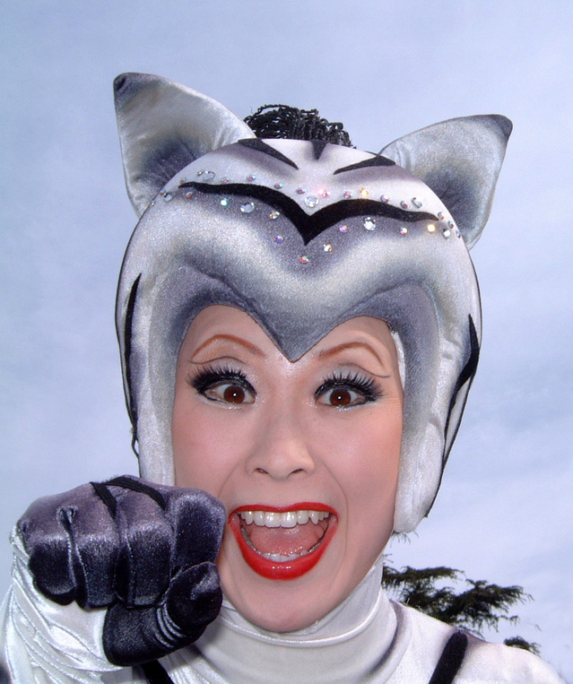

Announcements


Who’s Who
The CossiPlay family is:
Steven Rogers
Steve was a Navy Seal for 37 years before getting interested in hosting parties and helping people enyoj their fantasies together in a family-friendly fun environment.
Sally Rogers
After only 6 weeks of her first dress-making course, Sally was already designing and sewing elaborate ball gowns and costumes that amazed her instructors. 10 years later and she’s making even more amazing creations for happy customers.